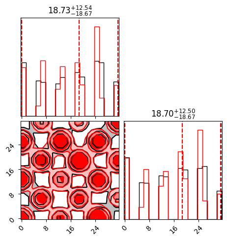

Eggbox#
import numpy as np
from dynesty import NestedSampler
from dynesty import utils as dyfunc
import matplotlib.pyplot as plt
import corner
# -------------------------------
# Eggbox definition
# -------------------------------
# Prior bounds
prior_min, prior_max = 0.0, 10.0 * np.pi
prior_volume = (prior_max - prior_min) ** 2 # for reference
# True evidence from the literature
true_logz = 235.856
def loglikelihood(theta):
"""
Eggbox log-likelihood.
theta: array of shape (2,)
"""
x, y = theta
return (2.0 + np.cos(x / 2.0) * np.cos(y / 2.0)) ** 5
def prior_transform(u):
"""
Transform from unit cube [0,1]^2 to parameter space [0, 10π]^2.
"""
x = prior_min + (prior_max - prior_min) * u[0]
y = prior_min + (prior_max - prior_min) * u[1]
return np.array([x, y])
# -------------------------------
# Run dynesty Nested Sampling
# -------------------------------
# 2 parameters
ndim = 2
# Set up the sampler
sampler = NestedSampler(
loglikelihood,
prior_transform,
ndim,
nlive=500, # number of live points; increase for accuracy
sample="rwalk", # random-walk proposals; can try "unif", "slice"
bound="multi", # bounding method ("multi" good for multimodal)
)
print("Running dynesty Nested Sampling on Eggbox...")
sampler.run_nested(print_progress=True)
res = sampler.results
samples, weights = res.samples, np.exp(res.logwt - res.logz[-1])
posterior_samples = dyfunc.resample_equal(samples, weights)
# -------------------------------
# Report results
# -------------------------------
logZ, logZerr = res.logz[-1], res.logzerr[-1]
print("\n==== RESULTS ====")
print(f"dynesty estimated logZ = {logZ:.3f} ± {logZerr:.3f}")
print(f"True logZ (literature) = {true_logz:.3f}")
print(f"Error = {logZ - true_logz:.3f}")
Running dynesty Nested Sampling on Eggbox...
3941it [00:02, 1677.19it/s, +500 | bound: 32 | nc: 1 | ncall: 65990 | eff(%): 6.781 | loglstar: -inf < 243.000 < inf | logz: 235.963 +/- 0.110 | dlogz: 0.001 > 0.509]
==== RESULTS ====
dynesty estimated logZ = 235.963 ± 0.206
True logZ (literature) = 235.856
Error = 0.107
import morphZ
# import logging
# from morphZ import setup_logging ; setup_logging(level=logging.INFO)
# Prior bounds
prior_min, prior_max = 0.0, 10.0 * np.pi
prior_volume = (prior_max - prior_min) ** 2 # 2-D uniform cube
def logprior(theta):
"""Uniform prior over [0, 10π]^2."""
x, y = theta
if (prior_min <= x <= prior_max) and (prior_min <= y <= prior_max):
return -np.log(prior_volume)
else:
return -np.inf
def lnprobfn(theta):
"""Log-probability combining prior and likelihood."""
return logprior(theta) + loglikelihood(theta)
samples = posterior_samples[::1,:] # total_samples[::20,:]
samples.shape
(4441, 2)
samples = posterior_samples[::2,:] # total_samples[::20,:]
tot_len , ndim = samples.shape
print('Total samples:', tot_len, 'Dimensions:', ndim)
log_prob = np.zeros(tot_len)
for i in range(tot_len):
log_prob[i] = lnprobfn(samples[i,:])
log_p_estimate = morphZ.evidence(
samples,
log_prob,
lnprobfn,
n_resamples=5000,
thin=1,n_estimations=100,morph_type="pair",kde_bw=0.01,output_path='./morphZ_eggbox/')
print('True:', true_logz)
Total samples: 2221 Dimensions: 2
Filtered proposal samples: 4455 valid samples out of 5000 total samples.
Estimation 1/100
iteration: 2 log(z) old: 235.8907521557108 log(z) New: 235.8896825595861
Converged in 2 iterations. log(z): 235.8908 +/-: 0.0105
Filtered proposal samples: 4432 valid samples out of 5000 total samples.
Estimation 2/100
iteration: 2 log(z) old: 235.89127211200875 log(z) New: 235.8899149210024
Converged in 2 iterations. log(z): 235.8913 +/-: 0.0107
Filtered proposal samples: 4369 valid samples out of 5000 total samples.
Estimation 3/100
iteration: 2 log(z) old: 235.89014575268936 log(z) New: 235.88928486199015
Converged in 2 iterations. log(z): 235.8901 +/-: 0.0105
Filtered proposal samples: 4448 valid samples out of 5000 total samples.
Estimation 4/100
iteration: 2 log(z) old: 235.87988296108858 log(z) New: 235.87895559396966
Converged in 2 iterations. log(z): 235.8799 +/-: 0.0106
Filtered proposal samples: 4423 valid samples out of 5000 total samples.
Estimation 5/100
iteration: 2 log(z) old: 235.88908951539977 log(z) New: 235.88783797206304
Converged in 2 iterations. log(z): 235.8891 +/-: 0.0106
Filtered proposal samples: 4418 valid samples out of 5000 total samples.
Estimation 6/100
iteration: 2 log(z) old: 235.88122487677515 log(z) New: 235.88036985525338
Converged in 2 iterations. log(z): 235.8812 +/-: 0.0106
Filtered proposal samples: 4422 valid samples out of 5000 total samples.
Estimation 7/100
iteration: 2 log(z) old: 235.89898873014323 log(z) New: 235.89785843335028
Converged in 2 iterations. log(z): 235.8990 +/-: 0.0105
Filtered proposal samples: 4422 valid samples out of 5000 total samples.
Estimation 8/100
iteration: 2 log(z) old: 235.87908658767034 log(z) New: 235.87811873309983
Converged in 2 iterations. log(z): 235.8791 +/-: 0.0107
Filtered proposal samples: 4446 valid samples out of 5000 total samples.
Estimation 9/100
iteration: 2 log(z) old: 235.88810165526806 log(z) New: 235.8871559695485
Converged in 2 iterations. log(z): 235.8881 +/-: 0.0105
Filtered proposal samples: 4417 valid samples out of 5000 total samples.
Estimation 10/100
iteration: 2 log(z) old: 235.87396870314316 log(z) New: 235.8731281270905
Converged in 2 iterations. log(z): 235.8740 +/-: 0.0106
Filtered proposal samples: 4422 valid samples out of 5000 total samples.
Estimation 11/100
iteration: 2 log(z) old: 235.89486490021497 log(z) New: 235.8935393512462
Converged in 2 iterations. log(z): 235.8949 +/-: 0.0106
Filtered proposal samples: 4406 valid samples out of 5000 total samples.
Estimation 12/100
iteration: 2 log(z) old: 235.89394963255756 log(z) New: 235.89283577472895
Converged in 2 iterations. log(z): 235.8939 +/-: 0.0105
Filtered proposal samples: 4445 valid samples out of 5000 total samples.
Estimation 13/100
iteration: 2 log(z) old: 235.9031208449092 log(z) New: 235.90172781672408
Converged in 2 iterations. log(z): 235.9031 +/-: 0.0106
Filtered proposal samples: 4426 valid samples out of 5000 total samples.
Estimation 14/100
iteration: 2 log(z) old: 235.8717852219991 log(z) New: 235.87095234611417
Converged in 2 iterations. log(z): 235.8718 +/-: 0.0106
Filtered proposal samples: 4431 valid samples out of 5000 total samples.
Estimation 15/100
iteration: 2 log(z) old: 235.88611148552246 log(z) New: 235.8849781446102
Converged in 2 iterations. log(z): 235.8861 +/-: 0.0106
Filtered proposal samples: 4466 valid samples out of 5000 total samples.
Estimation 16/100
iteration: 2 log(z) old: 235.89414413308987 log(z) New: 235.8929003592063
Converged in 2 iterations. log(z): 235.8941 +/-: 0.0105
Filtered proposal samples: 4416 valid samples out of 5000 total samples.
Estimation 17/100
iteration: 2 log(z) old: 235.8879839379478 log(z) New: 235.88693568684047
Converged in 2 iterations. log(z): 235.8880 +/-: 0.0106
Filtered proposal samples: 4445 valid samples out of 5000 total samples.
Estimation 18/100
iteration: 2 log(z) old: 235.88641590487197 log(z) New: 235.8856090216493
Converged in 2 iterations. log(z): 235.8864 +/-: 0.0104
Filtered proposal samples: 4415 valid samples out of 5000 total samples.
Estimation 19/100
iteration: 2 log(z) old: 235.89857522259825 log(z) New: 235.8973036228959
Converged in 2 iterations. log(z): 235.8986 +/-: 0.0106
Filtered proposal samples: 4440 valid samples out of 5000 total samples.
Estimation 20/100
iteration: 2 log(z) old: 235.88339015537875 log(z) New: 235.88262029523332
Converged in 2 iterations. log(z): 235.8834 +/-: 0.0104
Filtered proposal samples: 4446 valid samples out of 5000 total samples.
Estimation 21/100
iteration: 2 log(z) old: 235.88883069760922 log(z) New: 235.8877616446842
Converged in 2 iterations. log(z): 235.8888 +/-: 0.0105
Filtered proposal samples: 4447 valid samples out of 5000 total samples.
Estimation 22/100
iteration: 2 log(z) old: 235.89797832249025 log(z) New: 235.8967240027289
Converged in 2 iterations. log(z): 235.8980 +/-: 0.0106
Filtered proposal samples: 4439 valid samples out of 5000 total samples.
Estimation 23/100
iteration: 2 log(z) old: 235.88884261390317 log(z) New: 235.8878115838216
Converged in 2 iterations. log(z): 235.8888 +/-: 0.0106
Filtered proposal samples: 4385 valid samples out of 5000 total samples.
Estimation 24/100
iteration: 2 log(z) old: 235.87904890596113 log(z) New: 235.87807662226982
Converged in 2 iterations. log(z): 235.8790 +/-: 0.0107
Filtered proposal samples: 4402 valid samples out of 5000 total samples.
Estimation 25/100
iteration: 2 log(z) old: 235.89550842692597 log(z) New: 235.89433264644526
Converged in 2 iterations. log(z): 235.8955 +/-: 0.0106
Filtered proposal samples: 4452 valid samples out of 5000 total samples.
Estimation 26/100
iteration: 2 log(z) old: 235.89057543989907 log(z) New: 235.88965726127452
Converged in 2 iterations. log(z): 235.8906 +/-: 0.0104
Filtered proposal samples: 4453 valid samples out of 5000 total samples.
Estimation 27/100
iteration: 2 log(z) old: 235.86759163308705 log(z) New: 235.86662485422895
Converged in 2 iterations. log(z): 235.8676 +/-: 0.0107
Filtered proposal samples: 4419 valid samples out of 5000 total samples.
Estimation 28/100
iteration: 2 log(z) old: 235.8910487130457 log(z) New: 235.89000586067954
Converged in 2 iterations. log(z): 235.8910 +/-: 0.0105
Filtered proposal samples: 4451 valid samples out of 5000 total samples.
Estimation 29/100
iteration: 2 log(z) old: 235.90820127339978 log(z) New: 235.90676979075968
Converged in 2 iterations. log(z): 235.9082 +/-: 0.0105
Filtered proposal samples: 4425 valid samples out of 5000 total samples.
Estimation 30/100
iteration: 2 log(z) old: 235.89347001796625 log(z) New: 235.8924577578833
Converged in 2 iterations. log(z): 235.8935 +/-: 0.0105
Filtered proposal samples: 4436 valid samples out of 5000 total samples.
Estimation 31/100
iteration: 2 log(z) old: 235.90565556837362 log(z) New: 235.90434947743145
Converged in 2 iterations. log(z): 235.9057 +/-: 0.0105
Filtered proposal samples: 4461 valid samples out of 5000 total samples.
Estimation 32/100
iteration: 2 log(z) old: 235.89972881770484 log(z) New: 235.89858712488265
Converged in 2 iterations. log(z): 235.8997 +/-: 0.0105
Filtered proposal samples: 4410 valid samples out of 5000 total samples.
Estimation 33/100
iteration: 2 log(z) old: 235.88192665669402 log(z) New: 235.88101091755422
Converged in 2 iterations. log(z): 235.8819 +/-: 0.0106
Filtered proposal samples: 4452 valid samples out of 5000 total samples.
Estimation 34/100
iteration: 2 log(z) old: 235.90404527855208 log(z) New: 235.90288956111982
Converged in 2 iterations. log(z): 235.9040 +/-: 0.0104
Filtered proposal samples: 4471 valid samples out of 5000 total samples.
Estimation 35/100
iteration: 2 log(z) old: 235.90439597122145 log(z) New: 235.90256877136488
Converged in 2 iterations. log(z): 235.9044 +/-: 0.0107
Filtered proposal samples: 4430 valid samples out of 5000 total samples.
Estimation 36/100
iteration: 2 log(z) old: 235.8913546444054 log(z) New: 235.89027963576206
Converged in 2 iterations. log(z): 235.8914 +/-: 0.0105
Filtered proposal samples: 4449 valid samples out of 5000 total samples.
Estimation 37/100
iteration: 2 log(z) old: 235.8926271882115 log(z) New: 235.89118103557135
Converged in 2 iterations. log(z): 235.8926 +/-: 0.0107
Filtered proposal samples: 4386 valid samples out of 5000 total samples.
Estimation 38/100
iteration: 2 log(z) old: 235.88114926906024 log(z) New: 235.88043008193796
Converged in 2 iterations. log(z): 235.8811 +/-: 0.0105
Filtered proposal samples: 4448 valid samples out of 5000 total samples.
Estimation 39/100
iteration: 2 log(z) old: 235.90020430469477 log(z) New: 235.89893540243256
Converged in 2 iterations. log(z): 235.9002 +/-: 0.0105
Filtered proposal samples: 4411 valid samples out of 5000 total samples.
Estimation 40/100
iteration: 2 log(z) old: 235.88312073494797 log(z) New: 235.88208205311767
Converged in 2 iterations. log(z): 235.8831 +/-: 0.0106
Filtered proposal samples: 4418 valid samples out of 5000 total samples.
Estimation 41/100
iteration: 2 log(z) old: 235.89813200527027 log(z) New: 235.896930613856
Converged in 2 iterations. log(z): 235.8981 +/-: 0.0105
Filtered proposal samples: 4446 valid samples out of 5000 total samples.
Estimation 42/100
iteration: 2 log(z) old: 235.8989545163027 log(z) New: 235.89750217970345
Converged in 2 iterations. log(z): 235.8990 +/-: 0.0106
Filtered proposal samples: 4423 valid samples out of 5000 total samples.
Estimation 43/100
iteration: 2 log(z) old: 235.89319505782697 log(z) New: 235.89218880367943
Converged in 2 iterations. log(z): 235.8932 +/-: 0.0105
Filtered proposal samples: 4454 valid samples out of 5000 total samples.
Estimation 44/100
iteration: 2 log(z) old: 235.898992066077 log(z) New: 235.89780304144136
Converged in 2 iterations. log(z): 235.8990 +/-: 0.0105
Filtered proposal samples: 4431 valid samples out of 5000 total samples.
Estimation 45/100
iteration: 2 log(z) old: 235.89487499428895 log(z) New: 235.8936965734725
Converged in 2 iterations. log(z): 235.8949 +/-: 0.0105
Filtered proposal samples: 4442 valid samples out of 5000 total samples.
Estimation 46/100
iteration: 2 log(z) old: 235.87839733031453 log(z) New: 235.87770515617922
Converged in 2 iterations. log(z): 235.8784 +/-: 0.0104
Filtered proposal samples: 4409 valid samples out of 5000 total samples.
Estimation 47/100
iteration: 2 log(z) old: 235.89779395846554 log(z) New: 235.89652662262583
Converged in 2 iterations. log(z): 235.8978 +/-: 0.0106
Filtered proposal samples: 4435 valid samples out of 5000 total samples.
Estimation 48/100
iteration: 2 log(z) old: 235.8740579641727 log(z) New: 235.8732135171405
Converged in 2 iterations. log(z): 235.8741 +/-: 0.0106
Filtered proposal samples: 4449 valid samples out of 5000 total samples.
Estimation 49/100
iteration: 2 log(z) old: 235.8749066985371 log(z) New: 235.87416785099978
Converged in 2 iterations. log(z): 235.8749 +/-: 0.0105
Filtered proposal samples: 4425 valid samples out of 5000 total samples.
Estimation 50/100
iteration: 2 log(z) old: 235.88464898897567 log(z) New: 235.883737007515
Converged in 2 iterations. log(z): 235.8846 +/-: 0.0105
Filtered proposal samples: 4438 valid samples out of 5000 total samples.
Estimation 51/100
iteration: 2 log(z) old: 235.88794279250845 log(z) New: 235.8867092767335
Converged in 2 iterations. log(z): 235.8879 +/-: 0.0106
Filtered proposal samples: 4425 valid samples out of 5000 total samples.
Estimation 52/100
iteration: 2 log(z) old: 235.89251541172837 log(z) New: 235.89120378518425
Converged in 2 iterations. log(z): 235.8925 +/-: 0.0106
Filtered proposal samples: 4400 valid samples out of 5000 total samples.
Estimation 53/100
iteration: 2 log(z) old: 235.89153687002673 log(z) New: 235.8905155149716
Converged in 2 iterations. log(z): 235.8915 +/-: 0.0105
Filtered proposal samples: 4414 valid samples out of 5000 total samples.
Estimation 54/100
iteration: 2 log(z) old: 235.89884713459065 log(z) New: 235.89750029736317
Converged in 2 iterations. log(z): 235.8988 +/-: 0.0106
Filtered proposal samples: 4410 valid samples out of 5000 total samples.
Estimation 55/100
iteration: 2 log(z) old: 235.9152839972093 log(z) New: 235.91381102466406
Converged in 2 iterations. log(z): 235.9153 +/-: 0.0105
Filtered proposal samples: 4447 valid samples out of 5000 total samples.
Estimation 56/100
iteration: 2 log(z) old: 235.88416527752963 log(z) New: 235.88318463962656
Converged in 2 iterations. log(z): 235.8842 +/-: 0.0106
Filtered proposal samples: 4419 valid samples out of 5000 total samples.
Estimation 57/100
iteration: 2 log(z) old: 235.89589188876815 log(z) New: 235.89481483937408
Converged in 2 iterations. log(z): 235.8959 +/-: 0.0105
Filtered proposal samples: 4428 valid samples out of 5000 total samples.
Estimation 58/100
iteration: 2 log(z) old: 235.88733410752553 log(z) New: 235.8863811221752
Converged in 2 iterations. log(z): 235.8873 +/-: 0.0105
Filtered proposal samples: 4421 valid samples out of 5000 total samples.
Estimation 59/100
iteration: 2 log(z) old: 235.90610574109652 log(z) New: 235.9046004382416
Converged in 2 iterations. log(z): 235.9061 +/-: 0.0106
Filtered proposal samples: 4450 valid samples out of 5000 total samples.
Estimation 60/100
iteration: 2 log(z) old: 235.8979411320837 log(z) New: 235.89641909098415
Converged in 2 iterations. log(z): 235.8979 +/-: 0.0107
Filtered proposal samples: 4437 valid samples out of 5000 total samples.
Estimation 61/100
iteration: 2 log(z) old: 235.89557184894227 log(z) New: 235.89423414719417
Converged in 2 iterations. log(z): 235.8956 +/-: 0.0106
Filtered proposal samples: 4434 valid samples out of 5000 total samples.
Estimation 62/100
iteration: 2 log(z) old: 235.91695130026932 log(z) New: 235.91558816697145
Converged in 2 iterations. log(z): 235.9170 +/-: 0.0104
Filtered proposal samples: 4440 valid samples out of 5000 total samples.
Estimation 63/100
iteration: 2 log(z) old: 235.90945553631445 log(z) New: 235.90791311223037
Converged in 2 iterations. log(z): 235.9095 +/-: 0.0106
Filtered proposal samples: 4427 valid samples out of 5000 total samples.
Estimation 64/100
iteration: 2 log(z) old: 235.89536596777836 log(z) New: 235.89424495190622
Converged in 2 iterations. log(z): 235.8954 +/-: 0.0105
Filtered proposal samples: 4451 valid samples out of 5000 total samples.
Estimation 65/100
iteration: 2 log(z) old: 235.8961919676104 log(z) New: 235.89492628756975
Converged in 2 iterations. log(z): 235.8962 +/-: 0.0106
Filtered proposal samples: 4444 valid samples out of 5000 total samples.
Estimation 66/100
iteration: 2 log(z) old: 235.89751162505195 log(z) New: 235.8960704929941
Converged in 2 iterations. log(z): 235.8975 +/-: 0.0106
Filtered proposal samples: 4442 valid samples out of 5000 total samples.
Estimation 67/100
iteration: 2 log(z) old: 235.88981341434027 log(z) New: 235.88855162744298
Converged in 2 iterations. log(z): 235.8898 +/-: 0.0106
Filtered proposal samples: 4438 valid samples out of 5000 total samples.
Estimation 68/100
iteration: 2 log(z) old: 235.90029419915066 log(z) New: 235.89909197601042
Converged in 2 iterations. log(z): 235.9003 +/-: 0.0105
Filtered proposal samples: 4469 valid samples out of 5000 total samples.
Estimation 69/100
iteration: 2 log(z) old: 235.88834969209114 log(z) New: 235.8874183513645
Converged in 2 iterations. log(z): 235.8883 +/-: 0.0105
Filtered proposal samples: 4422 valid samples out of 5000 total samples.
Estimation 70/100
iteration: 2 log(z) old: 235.87758854354533 log(z) New: 235.87679208683412
Converged in 2 iterations. log(z): 235.8776 +/-: 0.0106
Filtered proposal samples: 4378 valid samples out of 5000 total samples.
Estimation 71/100
iteration: 2 log(z) old: 235.89566305827663 log(z) New: 235.89410254765386
Converged in 2 iterations. log(z): 235.8957 +/-: 0.0108
Filtered proposal samples: 4421 valid samples out of 5000 total samples.
Estimation 72/100
iteration: 2 log(z) old: 235.88209804612313 log(z) New: 235.88100832661098
Converged in 2 iterations. log(z): 235.8821 +/-: 0.0107
Filtered proposal samples: 4423 valid samples out of 5000 total samples.
Estimation 73/100
iteration: 2 log(z) old: 235.88633091527007 log(z) New: 235.88546606735306
Converged in 2 iterations. log(z): 235.8863 +/-: 0.0105
Filtered proposal samples: 4423 valid samples out of 5000 total samples.
Estimation 74/100
iteration: 2 log(z) old: 235.89596111980114 log(z) New: 235.89524708171774
Converged in 2 iterations. log(z): 235.8960 +/-: 0.0103
Filtered proposal samples: 4416 valid samples out of 5000 total samples.
Estimation 75/100
iteration: 2 log(z) old: 235.86270349592888 log(z) New: 235.86217817625024
Converged in 2 iterations. log(z): 235.8627 +/-: 0.0105
Filtered proposal samples: 4398 valid samples out of 5000 total samples.
Estimation 76/100
iteration: 2 log(z) old: 235.90239047151854 log(z) New: 235.90107739098926
Converged in 2 iterations. log(z): 235.9024 +/-: 0.0106
Filtered proposal samples: 4460 valid samples out of 5000 total samples.
Estimation 77/100
iteration: 2 log(z) old: 235.88987231810123 log(z) New: 235.88893403849113
Converged in 2 iterations. log(z): 235.8899 +/-: 0.0105
Filtered proposal samples: 4437 valid samples out of 5000 total samples.
Estimation 78/100
iteration: 2 log(z) old: 235.88985297362117 log(z) New: 235.88877740251206
Converged in 2 iterations. log(z): 235.8899 +/-: 0.0106
Filtered proposal samples: 4446 valid samples out of 5000 total samples.
Estimation 79/100
iteration: 2 log(z) old: 235.87732733805703 log(z) New: 235.87638775686185
Converged in 2 iterations. log(z): 235.8773 +/-: 0.0106
Filtered proposal samples: 4442 valid samples out of 5000 total samples.
Estimation 80/100
iteration: 2 log(z) old: 235.88388500180736 log(z) New: 235.88296369148725
Converged in 2 iterations. log(z): 235.8839 +/-: 0.0105
Filtered proposal samples: 4424 valid samples out of 5000 total samples.
Estimation 81/100
iteration: 2 log(z) old: 235.88922550861744 log(z) New: 235.8879874216328
Converged in 2 iterations. log(z): 235.8892 +/-: 0.0107
Filtered proposal samples: 4435 valid samples out of 5000 total samples.
Estimation 82/100
iteration: 2 log(z) old: 235.89929753949198 log(z) New: 235.8981586214277
Converged in 2 iterations. log(z): 235.8993 +/-: 0.0105
Filtered proposal samples: 4406 valid samples out of 5000 total samples.
Estimation 83/100
iteration: 2 log(z) old: 235.9058859144445 log(z) New: 235.90438022525305
Converged in 2 iterations. log(z): 235.9059 +/-: 0.0106
Filtered proposal samples: 4422 valid samples out of 5000 total samples.
Estimation 84/100
iteration: 2 log(z) old: 235.89280549810556 log(z) New: 235.8916796452067
Converged in 2 iterations. log(z): 235.8928 +/-: 0.0106
Filtered proposal samples: 4463 valid samples out of 5000 total samples.
Estimation 85/100
iteration: 2 log(z) old: 235.89907011905004 log(z) New: 235.89783915443135
Converged in 2 iterations. log(z): 235.8991 +/-: 0.0105
Filtered proposal samples: 4435 valid samples out of 5000 total samples.
Estimation 86/100
iteration: 2 log(z) old: 235.88056159932427 log(z) New: 235.87951690498105
Converged in 2 iterations. log(z): 235.8806 +/-: 0.0106
Filtered proposal samples: 4459 valid samples out of 5000 total samples.
Estimation 87/100
iteration: 2 log(z) old: 235.87932218228624 log(z) New: 235.87844020660617
Converged in 2 iterations. log(z): 235.8793 +/-: 0.0106
Filtered proposal samples: 4417 valid samples out of 5000 total samples.
Estimation 88/100
iteration: 2 log(z) old: 235.88901303364705 log(z) New: 235.88823895808787
Converged in 2 iterations. log(z): 235.8890 +/-: 0.0104
Filtered proposal samples: 4427 valid samples out of 5000 total samples.
Estimation 89/100
iteration: 2 log(z) old: 235.88500350911983 log(z) New: 235.88419135200255
Converged in 2 iterations. log(z): 235.8850 +/-: 0.0105
Filtered proposal samples: 4452 valid samples out of 5000 total samples.
Estimation 90/100
iteration: 2 log(z) old: 235.89328484242458 log(z) New: 235.89234601258175
Converged in 2 iterations. log(z): 235.8933 +/-: 0.0104
Filtered proposal samples: 4468 valid samples out of 5000 total samples.
Estimation 91/100
iteration: 2 log(z) old: 235.9005695869977 log(z) New: 235.89939477671464
Converged in 2 iterations. log(z): 235.9006 +/-: 0.0105
Filtered proposal samples: 4405 valid samples out of 5000 total samples.
Estimation 92/100
iteration: 2 log(z) old: 235.9014257004157 log(z) New: 235.90053744320687
Converged in 2 iterations. log(z): 235.9014 +/-: 0.0103
Filtered proposal samples: 4408 valid samples out of 5000 total samples.
Estimation 93/100
iteration: 2 log(z) old: 235.88844586529785 log(z) New: 235.8874955711728
Converged in 2 iterations. log(z): 235.8884 +/-: 0.0106
Filtered proposal samples: 4422 valid samples out of 5000 total samples.
Estimation 94/100
iteration: 2 log(z) old: 235.8823986113043 log(z) New: 235.88137793423195
Converged in 2 iterations. log(z): 235.8824 +/-: 0.0106
Filtered proposal samples: 4397 valid samples out of 5000 total samples.
Estimation 95/100
iteration: 2 log(z) old: 235.88602685733244 log(z) New: 235.88517238097532
Converged in 2 iterations. log(z): 235.8860 +/-: 0.0105
Filtered proposal samples: 4412 valid samples out of 5000 total samples.
Estimation 96/100
iteration: 2 log(z) old: 235.89500532348595 log(z) New: 235.89384891303035
Converged in 2 iterations. log(z): 235.8950 +/-: 0.0106
Filtered proposal samples: 4423 valid samples out of 5000 total samples.
Estimation 97/100
iteration: 2 log(z) old: 235.89476002793884 log(z) New: 235.89340658051344
Converged in 2 iterations. log(z): 235.8948 +/-: 0.0107
Filtered proposal samples: 4451 valid samples out of 5000 total samples.
Estimation 98/100
iteration: 2 log(z) old: 235.8971722306235 log(z) New: 235.89600706986752
Converged in 2 iterations. log(z): 235.8972 +/-: 0.0105
Filtered proposal samples: 4452 valid samples out of 5000 total samples.
Estimation 99/100
iteration: 2 log(z) old: 235.89124358581276 log(z) New: 235.8905104131865
Converged in 2 iterations. log(z): 235.8912 +/-: 0.0103
Filtered proposal samples: 4439 valid samples out of 5000 total samples.
Estimation 100/100
iteration: 2 log(z) old: 235.89776057421935 log(z) New: 235.89673631938737
Converged in 2 iterations. log(z): 235.8978 +/-: 0.0105
Saved log(z) to ./morphZ_eggbox//logz_morph_z_pair_0.01.txt
True: 235.856
np.array(log_p_estimate)[:,0].mean()-true_logz , np.array(log_p_estimate)[:,0].std()
(0.035411338439757856, 0.009628963397303266)
pair_kde = morphZ.PairwiseKDE(samples,'./morphZ_eggbox/params_MI.json',kde_bw=0.01)
pair_samples = pair_kde.resample(2000)
fig = corner.corner(
posterior_samples[::2,:], bins=20,label_kwargs = {"fontsize": 7},truth_color="dodgerblue",hist_kwargs={"density": True},quantiles=[0.05, 0.5, 0.95],
show_titles=True,
fontzise=6,
title_fmt=".2f",
plot_datapoints=False,
fill_contours=True,
levels=(0.5, 0.8, 0.95),
smooth=1.0
)
corner.corner(
pair_samples,color="red", bins=20,label_kwargs = {"fontsize": 7},truth_color="dodgerblue",hist_kwargs={"density": True},quantiles=[0.05, 0.5, 0.95],
show_titles=True,
fig=fig,
fontzise=6,
title_fmt=".2f",
plot_datapoints=False,
fill_contours=True,
levels=(0.5, 0.8, 0.95),
smooth=1.0
)
plt.show()
